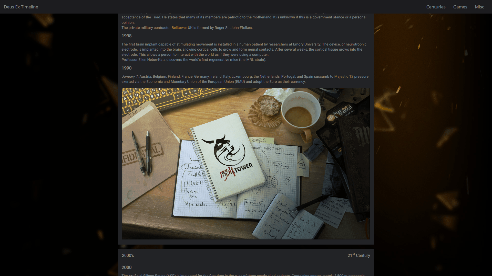

Deus Ex: Timeline
A comprehensive timeline of the Deus Ex universe.


Cross Section
View Image
In an attempt to make the Deus Ex Wiki's Timeline more readable, Deus Ex: Timeline was created. A site which hosts the information found on the Deus Ex Wikia encapsulated in an improved interface. Designed mobile-first, Deus Ex: Timeline features data categorization which grants users the ability to shuffle through sub-categories of data- ranging from centuries to games. No fluff, no ads, just raw content.
Every important person, place or thing is a hyperlink which points to the, already curated, Wikia page. This allows for important event updates which are disjoint from this site. Moreover, I am free to update the style and format of the site- if the need arises -without affecting the core of the site.
There have been three iterations of the site; each one better designed than the last. All three versions can be seen by clicking the button below. Version 3 is the current iteration and lacks the countdown timer and bland color palate of the first iteration. All versions have their branches archived so that viewing old iterations of the site can be done without the use of Git.
Every important person, place or thing is a hyperlink which points to the, already curated, Wikia page. This allows for important event updates which are disjoint from this site. Moreover, I am free to update the style and format of the site- if the need arises -without affecting the core of the site.
There have been three iterations of the site; each one better designed than the last. All three versions can be seen by clicking the button below. Version 3 is the current iteration and lacks the countdown timer and bland color palate of the first iteration. All versions have their branches archived so that viewing old iterations of the site can be done without the use of Git.